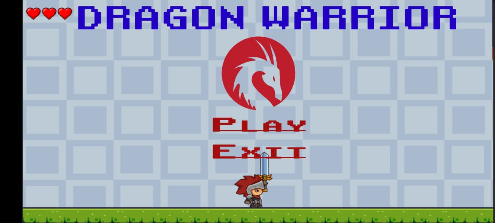
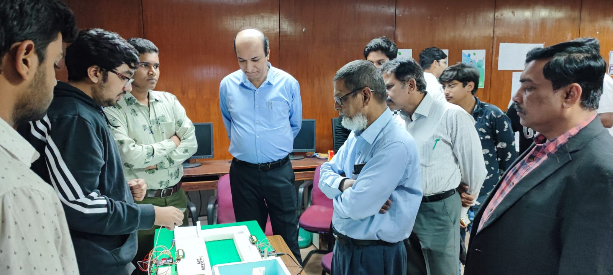
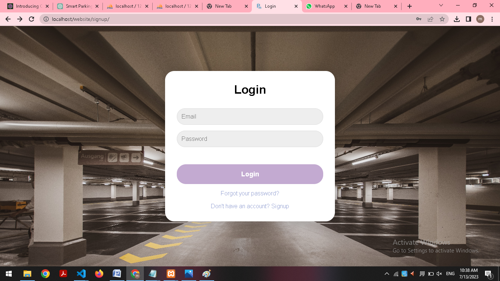

Welcome to my portfolio!
Hey,I am MOHAMMED MUZAMMIL AHMED


I am an enthusiastic third-year student pursuing a degree in Computer Science Engineering. My fervor lies in programming and finding solutions to complex problems. I possess a strong foundation in multiple programming languages, including C, Java, Python, HTML, and CSS. Furthermore, I have a solid understanding of machine learning principles and hands-on experience with MySQL databases.
I would also like to take the opportunity to share some notable accomplishments:
1.Secured FOURTH position in hack revolution 2023 conducted by CSI&ECELL MJCET
2. FIRST position in INNOVATIA PANOPLY 2023 conducted by CSED MJCET
3.Completed Headstart 2.0 held by IEEE CIS MJCET 2021 in GAME DEVELOPMENT
4.Achieved participation in HACK REVOLUTION 2022 conducted CSI&ECELL by MJCET
5.Secured FIRST in interschool BASKETBALL competition 2018 conducted by SPHS
"Dragon Warrior" is an exciting 2D game that I developed using Unity. Embark on a thrilling adventure as a courageous warrior facing numerous challenges and formidable dragons in a fantasy world. With captivating visuals, immersive gameplay mechanics, and dynamic sound effects, players are drawn into an epic journey of battles, quests, and exploration. Take on the role of the Dragon Warrior and prove your skills by defeating powerful adversaries, unlocking new abilities, and unraveling the mysteries of the enchanted realm. This game showcases my proficiency in game development and demonstrates my ability to create engaging and immersive experiences using Unity.
The crowd management system using YOLO v5 operates by analyzing video feeds or live camera streams in real-time to detect and track individuals within a crowd. It employs deep learning techniques to identify and classify various objects, including people, in the video frames.
1.Crowd Monitoring: The system continuously analyzes the video feeds or live camera streams using YOLO v5 to detect and track people within the crowd. It identifies the location and density of people at different entrances or areas.
2.Crowd Density Assessment: Using YOLO v5's object detection capabilities, the system estimates the crowd density at each entrance or location. It calculates the number of individuals within a specific area to determine the level of congestion.
3.Threshold Detection: The system sets predefined threshold values for crowd density at each entrance. These thresholds define the maximum acceptable number of people allowed at a specific location. If the crowd density exceeds the threshold, it triggers a diversion process.
4.Threshold Detection: The system sets predefined threshold values for crowd density at each entrance. These thresholds define the maximum acceptable number of people allowed at a specific location. If the crowd density exceeds the threshold, it triggers a diversion process.
5.Crowd Routing: Once the diversion route is determined, the system generates visual cues or provides instructions to guide the crowd towards the alternate entrance or area. This can be done through digital signage, audio announcements, or mobile notifications.
A smart parking management system that utilizes a website and IoT technology enables efficient and convenient parking space management. The system combines the power of the internet and IoT devices to provide real-time information, seamless user experiences, and effective parking space allocation.
The website serves as the user interface, allowing customers to access the smart parking system remotely. Users can visit the website to check parking availability, make reservations, and access other functionalities. The website provides a user-friendly interface where customers can easily navigate through the available options.
IoT devices, such as sensors, are installed in each parking space to detect occupancy and transmit data to the central system. These sensors continuously monitor the status of parking spaces, sending real-time updates to the website. This information ensures accurate and up-to-date availability data for customers, allowing them to make informed decisions about parking.
